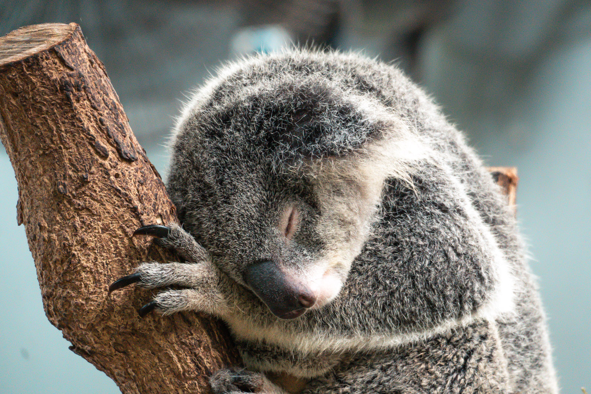

Dove l'intelligenza artificiale è già entrata
L'intelligenza artificiale non è una cosa che arriverà in fotografia. C'è già, spesso senza che ce ne accorgiamo:
- Nella fotocamera. Il riconoscimento degli occhi di persone e animali è apprendimento automatico.
- Nel telefono. Ogni foto è il risultato di più scatti uniti e corretti da algoritmi.
- Nei programmi di sviluppo. Maschere automatiche, riduzione del rumore, rimozione di oggetti, ingrandimento.
- Nella gestione del catalogo. Ricerca per contenuto, scelta assistita delle foto migliori.
Il punto non è se usarla. È capire quali strumenti aiutano a fare la foto che avevi visto e quali la inventano.
Strumenti che aiutano
Riduzione del rumore
È probabilmente il progresso più utile degli ultimi anni. Gli strumenti di riduzione del rumore basati sull'AI, come Denoise in Lightroom, lavorano sul file RAW e recuperano dettagli che i vecchi metodi cancellavano.

Questo cambia la tecnica di ripresa. Oggi conviene ancora di più alzare gli ISO per avere un tempo sicuro.
Maschere automatiche
Selezionare il cielo, il soggetto o le persone con un clic fa risparmiare ore. La decisione su cosa fare con quella maschera resta tua.
Scelta assistita
Alcuni programmi raggruppano le foto simili e segnalano quelle sfocate o con gli occhi chiusi. Sono utili per il primo passaggio. La scelta finale, quella del modulo 18, non si delega.
Strumenti che inventano
Gli strumenti generativi creano pixel che non sono mai esistiti.
- Rimozione generativa. Cancella un cartello, un turista, un cavo, e riempie il vuoto in modo credibile.
- Espansione generativa. Allarga il fotogramma oltre i bordi originali.
- Ingrandimento generativo. Aumenta la risoluzione inventando dettagli plausibili.
- Sostituzione del cielo e generazione di elementi interi.
Sono strumenti potenti. Il problema non è usarli. È non dirlo.
Dove sta il confine
Non esiste una regola valida per tutti. Esistono contesti diversi con regole diverse.
| Contesto | Cosa ci si aspetta |
|---|---|
| Fotogiornalismo e documentario | Nessuna aggiunta o rimozione di elementi. Solo correzioni di tono e colore. |
| Concorsi di natura | Regole molto rigide. Molti chiedono il file RAW originale per verificare. |
| Paesaggio e viaggio personale | Libertà, ma onestà con chi guarda se la scena è stata cambiata. |
| Arte e pubblicità | Tutto è possibile. Si tratta di illustrazione fotografica. |
Una domanda semplice aiuta: chi guarda la foto penserà che la scena era così? Se la risposta è sì e la scena non era così, dillo.
Una buona abitudine è scriverlo nella didascalia, con parole semplici: «cielo sostituito», «elemento rimosso», «immagine estesa». Chi guarda apprezza l'onestà più della perfezione.
Content Credentials
Le Content Credentials sono una sorta di etichetta digitale attaccata a un file. Dicono chi l'ha creato, con quale programma e quali modifiche sono state fatte. Si basano su uno standard aperto, C2PA, sostenuto da produttori di fotocamere, software e testate giornalistiche.
- Si attivano in fase di esportazione, in Lightroom, Photoshop e in alcune fotocamere.
- Si verificano caricando il file su contentcredentials.org/verify.
- Non impediscono la copia. Servono a dimostrare l'origine e la storia di un'immagine.
Tutte le foto di questo sito sono state esportate da Lightroom con le Content Credentials attive. Le credenziali sono registrate da Adobe e collegate a ogni file.
Esercizio
Circa 40 minuti
Aiutare o inventare
- Prendi una tua foto scattata con poca luce e ISO alti. Applica la riduzione del rumore AI e confronta con l'originale ingrandito al 100%.
- Prendi una foto con un elemento che disturba. Toglilo con la rimozione generativa.
- Ingrandisci la zona ritoccata. È credibile?
- Scrivi la didascalia onesta della seconda foto, come la pubblicheresti.
- Esporta la foto con le Content Credentials attive e verificala su contentcredentials.org/verify.